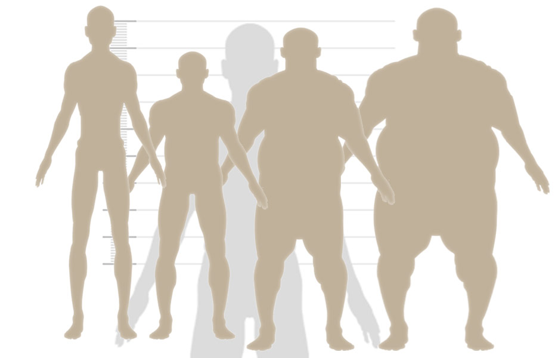

IMC é uma sigla utilizada para Índice de Massa Corporal. O Índice de Massa Corporal é uma medida utilizada para medir a obesidade adotada pela Organização Mundial de Saúde (OMS). É o padrão internacional para avaliar o grau de obesidade. O sobrepeso e a obesidade, indicados pelo IMC, são fatores de risco para doenças tais como a hipertensão arterial, a doença arterial coronariana e o diabetes melittus, além de outras patologias consideradas de alto risco para a Saúde Pública. Hoje em dia, o IMC é utilizado como forma de comparar a saúde de populações, ou até mesmo definir prescrição de medicações. Os valores de IMC são independentes de idade e sexo. Apesar disso, o IMC pode não corresponder ao mesmo grau de gordura em diferentes populações devido às diferentes proporções do corpo. Riscos à saúde associados ao aumento do IMC devem ser constantemente observados e interpretados, já que podem ser diferentes em cada população.

Ultimamente, vem acontecendo debates sobre se há necessidade do desenvolvimento de diferentes níveis de medida na tabela de IMC de acordo com diferentes grupos étnicos. Isso acontece devido à evidência de que as associações entre IMC, percentagem de gordura corporal e distribuição da gordura corporal diferem entre populações e, portanto, os riscos de saúde podem aumentar abaixo do ponto de corte de 25 kg/m2 que define o sobrepeso classificação atual da OMS. Já houveram algumas tentativas de interpretar o IMC diferentemente em populações asiáticas e do Pacífico, mas nenhuma alteração foi adotada. Um grupo de trabalho foi formado por especialistas da OMS e está realizando uma nova revisão e avaliação dos dados disponíveis sobre a relação entre a circunferência da cintura e o risco para a saúde. Veja abaixo uma lista com algumas das limitações do IMC: A partir do IMC não é possível diferenciar os componentes gordo e magro da massa corporal; A partir do IMC pessoas brevilíneas e/ou musculosas podem ter um valor de Índice de Massa Corporal inadequado à sua realidade e serem consideradas obesas; Diferenças étnicas influenciam no IMC. Por exemplo: descendentes asiáticos podem ser considerados mais obesos; Para idosos, o IMC possui uma classificação diferenciada. Uma das alternativas para o IMC é o Índice de Adiposidade Corporal (IAC). Leia mais sobre o IAC.

O cálculo do IMC é feito dividindo o peso (em quilogramas) pela altura (em metros) ao quadrado. É simples calcular o seu IMC. Por exemplo, se o seu peso é 80kg e a sua altura é 1,80m, a fórmula para calcular o IMC ficará: IMC = 80 ÷ 1,802 IMC = 80 ÷ 3,24 IMC = 24,69 De acordo com a tabela de IMC, você está no seu peso ideal. Outro exemplo, se você pesa 70kg e mede 1,50m, o cálculo do IMC será: IMC = 70 ÷ 1,502 IMC = 70 ÷ 2,25 IMC = 31,11 De acordo com a tabela de IMC, você está com obesidade de nível 1. Se preferir evitar este monte de cálculos, preencha o formulário da primeira página com seu peso e sua altura. O seu IMC será calculado e mostrado imediatamente.